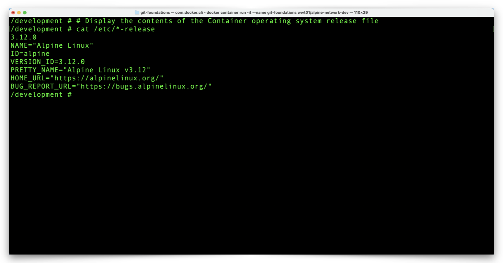
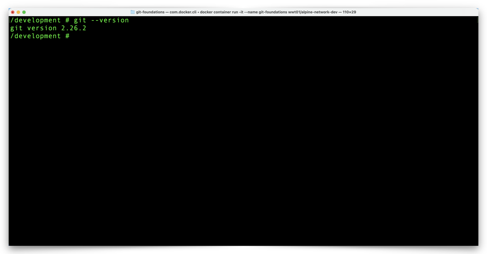

Hands-On Environment Setup
A WWT-built Docker Image provides a ready-to-use environment for the Git hands-on exercises. The Docker Container already has Git software installed and you don't need any Docker experience for these exercises. Just make sure you have Docker Desktop installed and running on your Windows or macOS computer and we will walk you through the development environment setup.
Tip
You can use your terminal/shell program to confirm your Docker environment is ready for use with the following command:
docker info
Success
If your output looks something like this image, you are all set:


Failure
If you see an error message similiar to the example below, make sure you installed Docker Desktop and that Docker Desktop is running. You may also review the Docker Desktop Installation Documentation.

There are two-steps in the process (download and then run) to create the Docker Container we need from the WWT-built Docker Image, but we will accomplish both steps with a single command.
-
Open your terminal/shell program (iTerm, PowerShell, Bash, etc.) and enter the following command:
docker container run -it --name git-foundations wwt01/alpine-network-devThis command performs the following actions:
- Downloads the 'wwt01/alpine-network-dev' Image from Docker Hub.
- Creates a Docker Container with the name 'git-foundations'.
- Attaches to the terminal of the 'git-foundations' Container.
Expect the first run of this command to take a few minutes, while Docker Desktop downloads the Image from Docker Hub. Docker Desktop stores the Image on your computer, so subsequent runs of this command will only take a split second.
You will know your Docker Container environment is ready for the Git hands-on exercises when your terminal prompt changes to
/development#:
-
If you aren't sure whether you are at your computer's terminal prompt or the prompt within the Docker Container, you can use this command to check:
# Display the contents of the Container operating system release file cat /etc/*-releaseTip
The Container will ignore any commands/lines that begin with the
#character, treating those lines as inline comments. Throughout the walkthrough documentation, you may copy entire blocks of commands and paste them in the Container terminal. These purpose of these comment lines is to explain specifically what the subsequent commands do. -
You are in the Docker Container environment if your output looks like this:

-
Check the version of Git in the environment with the following command:
git --versionThe result of that command should look something like this:

Here is a quick reference for some other Docker commands which will help you manage your Git hands-on environment:
Attention
Run these commands from your local terminal shell (Windows PowerShell, macOS Terminal, etc.) and not from within the Docker container shell:
control + d (key sequence) # Stops your Container and returns you to your terminal prompt
docker container start git-foundations # Restarts your Container in the background
docker container attach git-foundations # Returns you to the Container prompt
docker container rm git-foundations # Destroys your container so you can start over
Your environment is set up and ready to use! Not too painful so far, right? Click the link below to get started with Git: